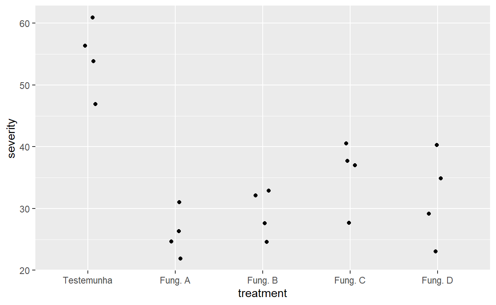
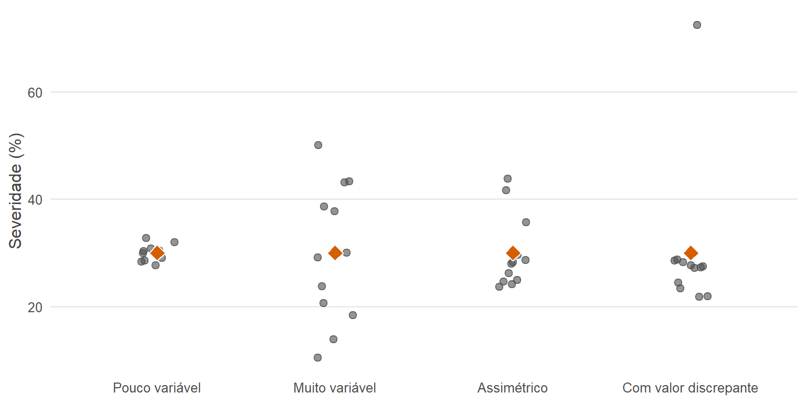
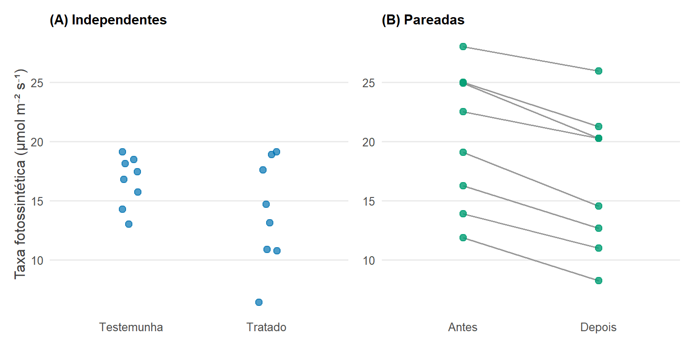
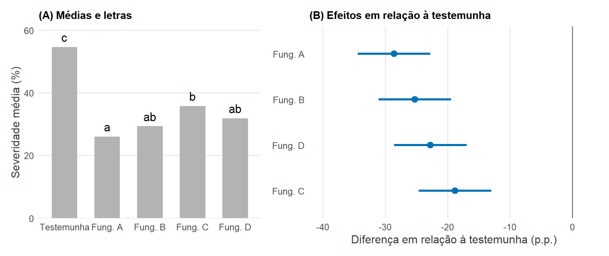
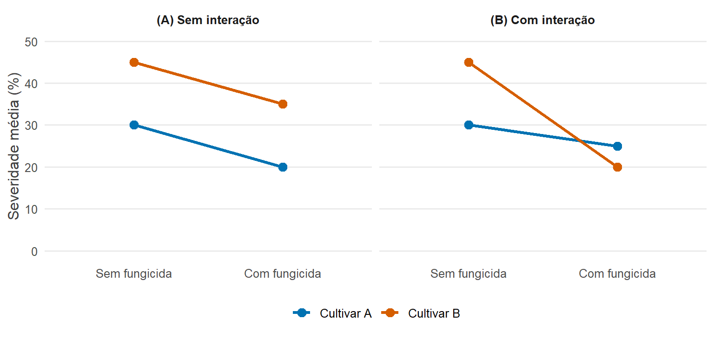
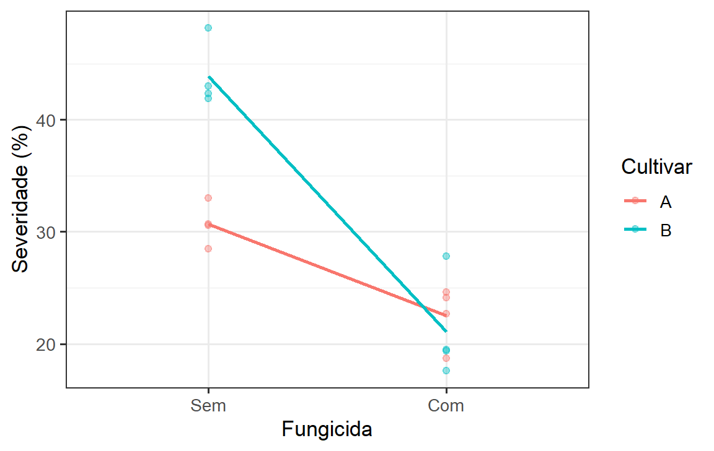
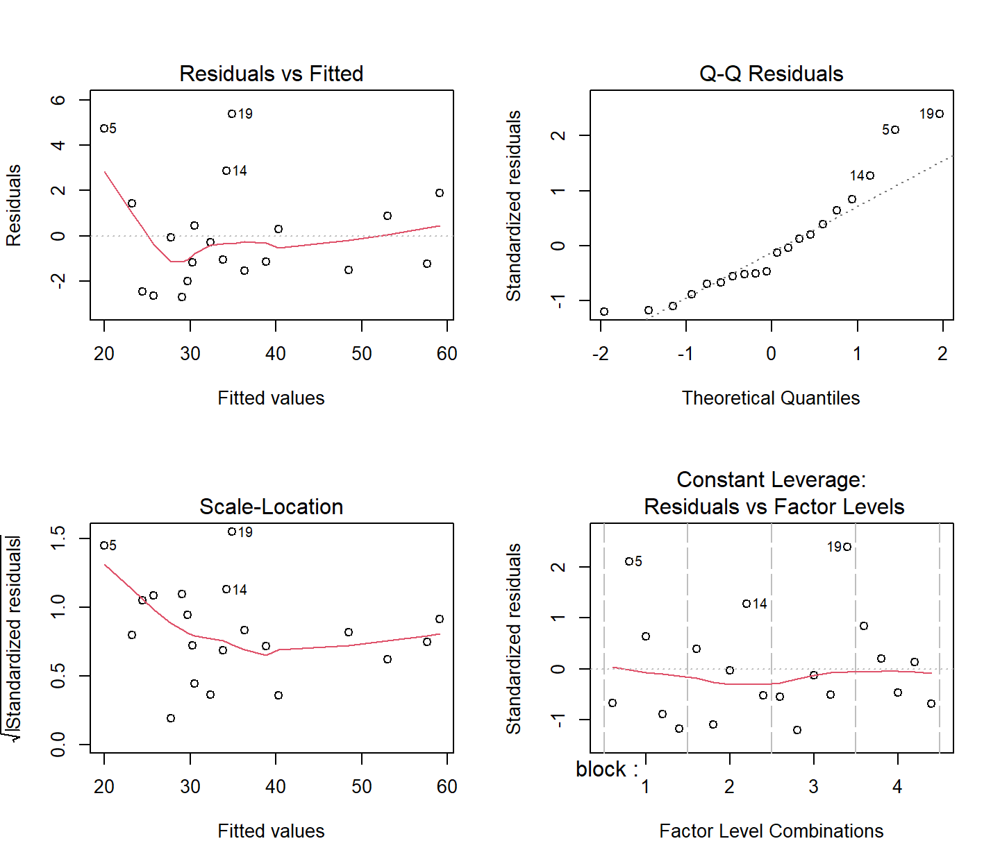
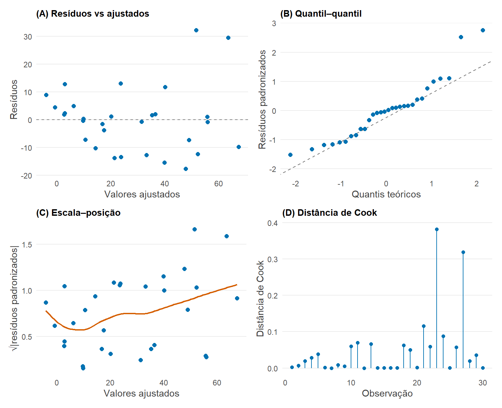
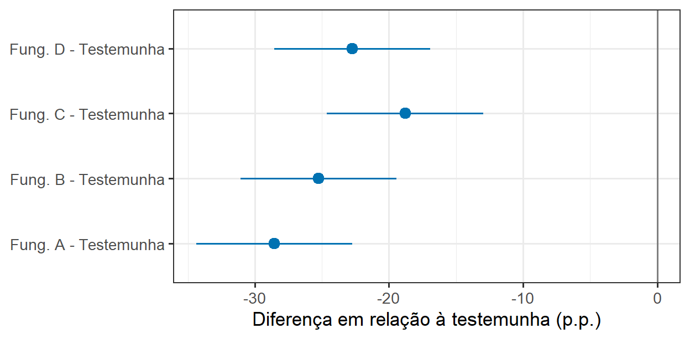

7 Como comparamos grupos?
7.1 Objetivos de aprendizagem
Importante
Ao concluir este capítulo, o leitor deverá ser capaz de:
- identificar questões de pesquisa que envolvem comparações entre grupos ou tratamentos;
- distinguir comparações independentes de comparações pareadas;
- estimar e interpretar diferenças entre médias de grupos;
- usar intervalos de confiança para quantificar a incerteza dos efeitos dos tratamentos;
- explicar a relação entre o teste t, a análise de variância e os modelos lineares;
- analisar experimentos com dois ou mais grupos;
- interpretar experimentos fatoriais e interações;
- distinguir comparações planejadas de comparações múltiplas a posteriori;
- avaliar os pressupostos dos modelos lineares;
- reconhecer quando transformações ou modelos alternativos podem ser necessários;
- comunicar comparações entre grupos usando estimativas, incerteza e gráficos adequados.
7.2 Por que comparar grupos?
Muitos experimentos em Fitopatologia são construídos em torno de comparações.
Questões típicas incluem:
- Um fungicida reduz a severidade da doença em relação a uma testemunha sem tratamento?
- As cultivares diferem em resistência?
- A inoculação altera uma resposta fisiológica?
- Diferentes tratamentos nutricionais afetam o desenvolvimento das lesões?
- A eficácia do tratamento depende da cultivar?
Embora essas questões difiram biologicamente, elas compartilham uma estrutura estatística comum: uma resposta quantitativa é comparada entre grupos definidos por um ou mais fatores experimentais.
Importante
O objetivo principal de uma comparação entre grupos não é determinar se os grupos são “significativamente diferentes”. É estimar o quanto eles diferem e quão incerta é essa diferença.
7.3 Da questão biológica à comparação estatística
Considere um experimento simples de manejo da doença.
7.3.1 Qual é o estimando?
Suponha que a severidade média da doença seja \(\mu_C\) na testemunha e \(\mu_T\) no tratamento.
Um estimando natural é a diferença:
\[ \Delta = \mu_T - \mu_C \]
A estimativa correspondente obtida no experimento é:
\[ \hat{\Delta} = \bar{y}_T - \bar{y}_C \]
A direção da subtração define o sinal do resultado. Com a convenção “tratamento menos testemunha”, valores negativos indicam redução da doença, e valores positivos, aumento. A convenção oposta é igualmente válida, desde que declarada. O importante é definir o contraste explicitamente, no texto e nas figuras, para que o leitor não precise adivinhá-lo.
Dica
Sempre defina a direção de uma comparação. “O tratamento diferiu da testemunha em 15%” é ambíguo, a menos que a direção da subtração esteja clara.
7.4 Olhando os dados antes de comparar médias
Antes de ajustar um modelo estatístico, examine as observações. Os princípios da análise exploratória (Capítulo 4) e da visualização (Capítulo 5) aplicam-se diretamente às comparações entre grupos.
7.4.1 Mostre as observações individuais
Com o número de repetições típico dos experimentos em Fitopatologia, cada observação pode ser mostrada. Um gráfico de pontos por tratamento revela imediatamente o número de unidades, a dispersão e os valores incomuns.
7.4.2 Examine as distribuições dos grupos
Verifique se as observações de cada grupo são aproximadamente simétricas ou assimétricas, se há acúmulo de valores em zero ou em 100% e se algum grupo parece conter subgrupos distintos.
7.4.3 Examine a variabilidade entre os grupos
Compare a dispersão dos grupos. Em dados de doença, a variabilidade frequentemente aumenta com a média: a testemunha, com mais doença, costuma ser mais variável que os tratamentos eficazes. Essa característica afeta a escolha do método.
7.4.4 Identifique observações incomuns
Uma parcela com valor muito diferente das demais do mesmo tratamento deve ser conferida com os registros originais antes da análise.
7.4.5 Verifique a estrutura experimental
Confirme o número de unidades experimentais por tratamento, a presença de blocos e a existência de subamostras. A análise deve refletir essa estrutura (Capítulo 2).
library(ggplot2)
ggplot(data, aes(x = treatment, y = severity)) +
geom_point(position = position_jitter(width = 0.1))
7.4.6 Por que as médias sozinhas são insuficientes
Dois tratamentos podem ter médias semelhantes, mas diferir muito em:
- variabilidade;
- distribuição;
- tamanho da amostra;
- observações incomuns.

7.5 Comparando dois grupos independentes
7.5.1 Um exemplo simples
Considere um ensaio de campo em que seis parcelas receberam um fungicida e seis parcelas foram mantidas sem tratamento, alocadas ao acaso. A severidade média foi de 38% na testemunha e de 24% nas parcelas tratadas. Os dados simulados usados neste capítulo (objeto dois) reproduzem esse exemplo.
7.5.2 Diferença entre médias
A grandeza central é:
\[ \hat{\Delta} = \bar{y}_1 - \bar{y}_2 \]
No exemplo, com a convenção tratamento menos testemunha, \(\hat{\Delta} = 24 - 38 = -14\) pontos percentuais.
7.5.3 Incerteza da diferença
A diferença estimada tem seu próprio erro padrão, que depende da variabilidade dentro dos grupos e do número de unidades em cada um. A partir dele, calcula-se um intervalo de confiança para a diferença (Capítulo 6). No exemplo, o intervalo de confiança de 95% vai de −21,1 a −6,9 pontos percentuais (ver a saída do teste t abaixo): reduções entre cerca de 7 e 21 pontos são compatíveis com os dados.
7.5.4 O teste t para amostras independentes
O teste t avalia uma comparação entre duas médias populacionais.
Conceitualmente:
\[ t = \frac{\text{diferença estimada}} {\text{erro padrão da diferença}} \]
Quanto maior a diferença em relação à sua incerteza, maior o valor absoluto de \(t\) e menor o valor-P. Os detalhes do cálculo são feitos pelo programa; o importante é compreender que o teste compara o tamanho da diferença com a precisão com que ela foi estimada.
7.5.5 O teste t de Welch
O teste t clássico pressupõe que os dois grupos têm a mesma variância. A versão de Welch não faz esse pressuposto e ajusta o erro padrão e os graus de liberdade quando as variâncias diferem. Como variâncias desiguais são comuns em dados de doença, e como o teste de Welch perde muito pouco quando as variâncias são de fato iguais, ele é geralmente preferível a assumir automaticamente variâncias iguais. No R, t.test() usa a versão de Welch por padrão.
t.test(severity ~ treatment, data = dois)
Welch Two Sample t-test
data: severity by treatment
t = 4.4094, df = 10, p-value = 0.001316
alternative hypothesis: true difference in means between group Testemunha and group Fungicida is not equal to 0
95 percent confidence interval:
6.933797 21.099536
sample estimates:
mean in group Testemunha mean in group Fungicida
38.00000 23.98333 7.5.6 Interpretando o resultado
Não pare em:
P = 0,001
Em vez disso, relate:
A severidade média da doença foi 14,0 pontos percentuais menor no grupo tratado do que na testemunha (IC 95%: 6,9 a 21,1 pontos percentuais).
Importante
A diferença estimada e seu intervalo de confiança geralmente fornecem mais informação biológica do que o valor-P sozinho.
7.6 Observações independentes versus pareadas
Nem todas as comparações entre dois grupos envolvem observações independentes.
7.6.1 Observações independentes
Exemplos:
- parcelas diferentes recebendo tratamentos diferentes;
- plantas diferentes atribuídas independentemente aos tratamentos;
- isolados diferentes atribuídos às condições experimentais.
7.6.2 Observações pareadas
Exemplos:
- medidas antes e depois do tratamento na mesma unidade experimental;
- duas medidas obtidas em unidades experimentais emparelhadas;
- dois tratamentos avaliados em material naturalmente pareado, como as duas metades da mesma folha.

7.6.3 O teste t pareado
Para observações pareadas, a análise se concentra nas diferenças dentro de cada par:
\[ d_i = y_{i1} - y_{i2} \]
e pergunta sobre a diferença média, \(\mu_d\). Como cada par compartilha as condições de uma mesma unidade, a variação entre unidades é removida da comparação, o que geralmente aumenta a precisão.
t.test(before, after, paired = TRUE)
Paired t-test
data: before and after
t = 9.7412, df = 7, p-value = 2.542e-05
alternative hypothesis: true mean difference is not equal to 0
95 percent confidence interval:
2.745048 4.504952
sample estimates:
mean difference
3.625
Aviso
O pareamento é uma propriedade do delineamento do estudo. Ele não deve ser introduzido na análise apenas porque dois grupos têm o mesmo número de observações.
7.7 Comparando mais de dois grupos
Experimentos em Fitopatologia frequentemente têm vários tratamentos.
Exemplos incluem:
- vários fungicidas;
- várias cultivares;
- diferentes concentrações de inóculo;
- várias temperaturas;
- vários tratamentos nutricionais.
7.7.1 Por que não fazer muitos testes t?
Suponha que quatro tratamentos sejam comparados. Há seis comparações dois a dois possíveis. Se cada uma for testada com \(\alpha = 0{,}05\), a probabilidade de que pelo menos uma pareça significativa por acaso, mesmo sem nenhuma diferença real, é bem maior que 5% (Capítulo 6). Além disso, cada teste t usa apenas os dados de dois grupos para estimar a variabilidade, desperdiçando a informação dos demais. Um modelo que analisa todos os grupos juntos resolve os dois problemas.
7.7.2 Análise de variância
A análise de variância (ANOVA) fornece um arcabouço para avaliar simultaneamente a variação entre vários grupos.
7.7.3 Variação dentro e entre grupos
Conceitualmente, a ANOVA separa a variação em:
7.7.4 O teste F
Conceitualmente:
\[ F = \frac{\text{variação explicada pelos grupos}} {\text{variação não explicada}} \]
Se os tratamentos não tivessem efeito, as médias dos grupos difeririam apenas pela variação casual, e as duas fontes de variação seriam de magnitude semelhante, com \(F\) próximo de 1. Quando as médias diferem mais do que a variação dentro dos grupos faria esperar, \(F\) aumenta e o valor-P diminui.
7.8 A ANOVA como modelo linear
Esta é uma transição conceitual importante.
Uma ANOVA com um fator pode ser escrita como:
\[ y_i = \beta_0 + \beta_1 x_{1i} + \beta_2 x_{2i} + \cdots + \varepsilon_i \]
em que as variáveis \(x\) indicam a qual grupo pertence cada observação. O mesmo arcabouço de modelo linear usado para comparar grupos será usado depois para estudar relações entre variáveis quantitativas.
Importante
O teste t, a ANOVA e a regressão linear não são procedimentos estatísticos sem relação entre si. São casos particulares do mesmo arcabouço geral do modelo linear.
7.8.1 Ajustando o modelo no R
model <- lm(severity ~ treatment, data = data)
anova(model)Analysis of Variance Table
Response: severity
Df Sum Sq Mean Sq F value Pr(>F)
treatment 4 2021.37 505.34 16.947 1.948e-05 ***
Residuals 15 447.28 29.82
---
Signif. codes: 0 '***' 0.001 '**' 0.01 '*' 0.05 '.' 0.1 ' ' 17.8.2 Examinando as estimativas do modelo
summary(model)
Call:
lm(formula = severity ~ treatment, data = data)
Residuals:
Min 1Q Median 3Q Max
-8.725 -3.050 0.850 3.100 8.475
Coefficients:
Estimate Std. Error t value Pr(>|t|)
(Intercept) 54.575 2.730 19.989 3.18e-12 ***
treatmentFung. A -28.550 3.861 -7.394 2.24e-06 ***
treatmentFung. B -25.250 3.861 -6.539 9.37e-06 ***
treatmentFung. C -18.800 3.861 -4.869 0.000204 ***
treatmentFung. D -22.750 3.861 -5.892 2.96e-05 ***
---
Signif. codes: 0 '***' 0.001 '**' 0.01 '*' 0.05 '.' 0.1 ' ' 1
Residual standard error: 5.461 on 15 degrees of freedom
Multiple R-squared: 0.8188, Adjusted R-squared: 0.7705
F-statistic: 16.95 on 4 and 15 DF, p-value: 1.948e-05Na parametrização padrão do R, o intercepto é a média estimada do grupo de referência (o primeiro nível do fator, geralmente em ordem alfabética), e cada coeficiente de tratamento é a diferença entre a média daquele tratamento e a do grupo de referência. Se a testemunha for definida como nível de referência, os coeficientes passam a ser diretamente os efeitos dos tratamentos em relação a ela. Por isso, vale a pena definir o nível de referência de forma deliberada, por exemplo com relevel().
7.9 O que o teste global nos diz?
Para vários tratamentos, a hipótese nula é:
\[ H_0: \mu_1 = \mu_2 = \cdots = \mu_k \]
A alternativa é que pelo menos uma média populacional difere.
Aviso
Uma ANOVA global significativa não nos diz quais tratamentos diferem nem qual é o tamanho dessas diferenças.
7.10 Contrastes: fazendo perguntas específicas
Muitas vezes, a questão biológica é mais específica do que:
Algum tratamento é diferente?
Exemplos:
- Os fungicidas reduzem a doença em relação à testemunha?
- As cultivares resistentes diferem de um padrão suscetível?
- O aumento da dose produz uma resposta sistemática?
- Uma classe de tratamentos é mais eficaz que outra?
7.10.1 Contrastes planejados
Um contraste representa uma comparação cientificamente definida entre médias de tratamentos. Formalmente, é uma combinação das médias com coeficientes que somam zero. A diferença entre dois tratamentos é o contraste mais simples (coeficientes +1 e −1); a comparação da média de dois fungicidas com a testemunha é outro (coeficientes +½, +½ e −1).
7.10.2 Tratamento versus testemunha
Quando o objetivo é comparar cada tratamento com uma testemunha comum, o número de comparações é igual ao número de tratamentos, e não ao de todos os pares possíveis. O procedimento de Dunnett ajusta esses contrastes para a multiplicidade, mantendo a atenção nas comparações que interessam.
7.10.3 Grupos de tratamentos
Às vezes, a questão envolve classes de tratamentos: fungicidas de sítio específico versus multissítios, cultivares resistentes versus suscetíveis, produtos biológicos versus químicos. Contrastes que comparam a média de uma classe com a de outra respondem diretamente a essas questões.
Dica
Quando as comparações decorrem diretamente da questão científica, defina-as antes de examinar os resultados, sempre que possível.
7.11 Comparações múltiplas
7.11.1 Por que a multiplicidade importa
Quanto mais comparações são feitas, maior a oportunidade de surgirem diferenças aparentemente incomuns apenas por acaso.
7.11.2 Comparações dois a dois
Comparar todos os pares de tratamentos é útil quando não há uma estrutura prévia entre os tratamentos, como em uma avaliação de muitas cultivares. Com \(k\) tratamentos, há \(k(k-1)/2\) pares, e o número cresce rapidamente.
7.11.3 Comparações de Tukey
O procedimento de Tukey (diferença honestamente significativa, HSD) ajusta todos os intervalos de confiança e testes dois a dois para que a probabilidade de pelo menos um falso positivo em todo o conjunto de comparações permaneça no nível escolhido.
7.11.4 Comparações com uma testemunha
O procedimento de Dunnett faz o mesmo para o conjunto, menor, de comparações de cada tratamento com a testemunha. Como há menos comparações, ele é mais poderoso do que o de Tukey para essa finalidade.
7.11.5 Métodos de ajuste
Os principais métodos incluem:
- Tukey, para todas as comparações dois a dois;
- Dunnett, para comparações com uma testemunha;
- Bonferroni, simples e geral, porém conservador quando há muitas comparações;
- taxa de falsas descobertas (FDR), que controla a proporção esperada de falsos positivos entre os resultados declarados significativos, útil quando há muitos testes.
Um tratamento matemático detalhado não é necessário aqui.
7.11.6 Apresentação com letras
Artigos de Fitopatologia frequentemente relatam resultados como:
Tratamento A a
Tratamento B ab
Tratamento C b
Tratamento D c7.11.7 O que as letras dizem — e o que não dizem
Nessa apresentação, tratamentos que compartilham uma letra não diferiram significativamente segundo o procedimento usado, e tratamentos sem letras em comum diferiram. As letras resumem um conjunto de decisões dicotômicas. Elas não informam o tamanho das diferenças, sua incerteza nem se as diferenças são biologicamente relevantes. Duas médias com letras diferentes podem diferir por uma quantidade trivial, se estimadas com muita precisão, e duas médias com a mesma letra podem diferir muito, se estimadas com pouca precisão. Além disso, letras são frequentemente lidas como se definissem grupos homogêneos de tratamentos, o que não é verdade: no exemplo acima, A não difere de B, B não difere de C, mas A difere de C.
Aviso
A apresentação com letras resume decisões estatísticas, mas esconde a magnitude e a incerteza das diferenças entre tratamentos. Sempre que possível, interprete-a junto com os efeitos estimados e os intervalos de confiança.
7.12 Das letras às estimativas
Esta seção resume a proposta central do capítulo: substituir, ou pelo menos complementar, a apresentação com letras por estimativas dos efeitos com sua incerteza.
Compare:
7.12.1 Apresentação convencional
Os números abaixo vêm do ensaio simulado deste capítulo (testemunha e quatro fungicidas em quatro blocos), analisado mais adiante com o emmeans.
Tratamento Média (%)
Fung. A 26,0 a
Fung. B 29,3 ab
Fung. D 31,8 ab
Fung. C 35,8 b
Testemunha 54,6 ccom uma figura baseada em estimação, que mostra o efeito de cada tratamento em relação à testemunha e seu intervalo de confiança (ajustado por Dunnett):
Efeito em relação à testemunha (pontos percentuais)
Fung. A ●────── −28,6 (−34,4 a −22,7)
Fung. B ●────── −25,2 (−31,1 a −19,4)
Fung. D ●────── −22,8 (−28,6 a −16,9)
Fung. C ●────── −18,8 (−24,6 a −13,0)
| | |
−40 −20 0A figura mostra diretamente que todos os tratamentos reduziram a doença, que as reduções vão de cerca de 19 a 29 pontos percentuais, que a incerteza de cada estimativa é de aproximadamente ±6 pontos e que os intervalos se sobrepõem bastante, de modo que a diferença entre os tratamentos é muito menor, e mais incerta, do que a diferença entre qualquer tratamento e a testemunha.

Discuta:
- Qual tratamento tem o melhor desempenho?
- Por quanto?
- Quão incerta é a diferença?
- A diferença é biologicamente relevante?
7.13 Experimentos fatoriais
Muitos experimentos em Fitopatologia envolvem mais de um fator.
Exemplos:
Cultivar × Fungicida
Temperatura × Molhamento foliar
Cultivar × Inoculação
Silício × Patógeno
Fungicida × Época de aplicação7.13.1 Efeitos principais
Um efeito principal descreve o efeito médio de um fator ao longo dos níveis de outro fator.
7.13.2 Interações
Uma interação ocorre quando o efeito de um fator depende do nível de outro.
Importante
Quando uma interação é biologicamente relevante, a interpretação deve se concentrar nos efeitos condicionais, e não nos efeitos principais médios ao longo do fator com o qual ele interage.
7.13.3 Visualizando interações

Com os dados simulados do experimento fatorial (duas cultivares, com e sem fungicida, quatro repetições), o gráfico de interação mostra linhas claramente não paralelas:
ggplot(fatorial,
aes(x = fungicide,
y = severity,
group = cultivar,
colour = cultivar)) +
geom_point(alpha = 0.4) +
stat_summary(fun = mean, geom = "line", linewidth = 1) +
labs(x = "Fungicida", y = "Severidade (%)", colour = "Cultivar") +
theme_bw(base_size = 13)
7.13.4 Ajustando um modelo fatorial
model_fat <- lm(
severity ~ cultivar * fungicide,
data = fatorial
)
anova(model_fat)Analysis of Variance Table
Response: severity
Df Sum Sq Mean Sq F value Pr(>F)
cultivar 1 136.89 136.89 13.686 0.0030387 **
fungicide 1 957.90 957.90 95.770 4.521e-07 ***
cultivar:fungicide 1 213.16 213.16 21.312 0.0005938 ***
Residuals 12 120.03 10.00
---
Signif. codes: 0 '***' 0.001 '**' 0.01 '*' 0.05 '.' 0.1 ' ' 1A linha cultivar:fungicide testa a interação. Os efeitos do fungicida dentro de cada cultivar, que são a informação relevante quando há interação, são obtidos com o emmeans (ver adiante):
library(emmeans)
emm_fat <- emmeans(model_fat, ~ fungicide | cultivar)
contrast(emm_fat, "revpairwise")cultivar = A:
contrast estimate SE df t.ratio p.value
Com - Sem -8.18 2.24 12 -3.656 0.0033
cultivar = B:
contrast estimate SE df t.ratio p.value
Com - Sem -22.77 2.24 12 -10.184 <0.0001Nos dados simulados, o fungicida reduziu a severidade em 8,2 pontos percentuais na cultivar A e em 22,8 pontos na cultivar B: o mesmo padrão descrito a seguir.
A notação * inclui:
cultivar
+
fungicide
+
cultivar × fungicide7.13.5 Interpretando uma interação
Suponha que um fungicida reduza a severidade em 5 pontos percentuais na cultivar A e em 25 pontos percentuais na cultivar B. O efeito principal do fungicida, a média dos dois efeitos, seria uma redução de 15 pontos — um valor que não descreve nenhuma das duas cultivares. A informação biologicamente relevante é que o benefício do fungicida depende da cultivar: é pequeno na cultivar A, provavelmente mais resistente, e grande na cultivar B. Nesse caso, os efeitos do fungicida devem ser relatados separadamente para cada cultivar.
7.14 Blocos e comparações entre grupos
Retome o delineamento em blocos casualizados apresentado no Capítulo 2.
7.14.1 Por que os blocos pertencem ao modelo
Se os tratamentos foram casualizados dentro dos blocos, a análise deve refletir essa estrutura.
Um modelo simples pode ser escrito como:
\[ y_{ij} = \mu + \tau_i + b_j + \varepsilon_{ij} \]
em que:
- \(\mu\) é a média geral;
- \(\tau_i\) é o efeito do tratamento;
- \(b_j\) representa a variação entre blocos;
- \(\varepsilon_{ij}\) representa a variação residual.
model <- lm(
severity ~ block + treatment,
data = data
)
anova(model)Analysis of Variance Table
Response: severity
Df Sum Sq Mean Sq F value Pr(>F)
block 3 345.97 115.32 13.659 0.0003555 ***
treatment 4 2021.37 505.34 59.856 7.936e-08 ***
Residuals 12 101.31 8.44
---
Signif. codes: 0 '***' 0.001 '**' 0.01 '*' 0.05 '.' 0.1 ' ' 1Incluir o bloco no modelo remove a variação entre blocos do erro experimental, tornando as comparações entre tratamentos mais precisas. Em delineamentos mais complexos, como parcelas subdivididas ou experimentos repetidos em vários locais, os blocos e outras fontes de variação são frequentemente tratados como efeitos aleatórios em modelos mistos, um tema que vai além deste capítulo.
Nota
O modelo estatístico deve refletir a forma como o experimento foi delineado. Os blocos não são algo acrescentado na análise apenas para melhorar a significância estatística.
7.15 Pressupostos do modelo
A validade da inferência a partir de um modelo linear depende de pressupostos sobre a variação residual.
7.15.1 Independência
A independência vem principalmente do delineamento do estudo: casualização, unidades experimentais bem definidas e ausência de pseudorrepetição.
7.15.2 Linearidade
Nas comparações entre grupos, o modelo deve representar adequadamente a estrutura sistemática dos tratamentos, incluindo blocos e interações relevantes.
7.15.3 Variância constante
A variabilidade residual deve ser razoavelmente semelhante entre os valores ajustados ou entre os grupos.
7.15.4 Distribuição dos resíduos
O pressuposto de normalidade diz respeito aos resíduos do modelo — e não necessariamente à variável resposta bruta.
Importante
Os pressupostos do modelo aplicam-se principalmente aos erros, ou resíduos, gerados pelo modelo, e não simplesmente à variável resposta observada.
7.16 Diagnóstico do modelo
7.16.1 Resíduos versus valores ajustados
Este gráfico deve mostrar uma nuvem de pontos sem padrão. Um formato de funil, com resíduos mais dispersos para valores ajustados maiores, indica variância que aumenta com a média, muito comum em dados de doença.
7.16.2 Gráficos quantil–quantil
O gráfico quantil–quantil compara os resíduos com o que seria esperado sob uma distribuição normal. Pontos próximos à linha indicam resíduos aproximadamente normais; curvaturas sistemáticas indicam assimetria ou caudas pesadas.
7.16.3 Observações incomuns
Resíduos muito grandes identificam observações que o modelo descreve mal. Elas devem ser conferidas com os registros originais.
7.16.4 Influência
Algumas observações têm influência desproporcional sobre as estimativas. Medidas como a distância de Cook ajudam a identificá-las. Uma observação influente não deve ser removida automaticamente, mas convém verificar se as conclusões mudam sem ela.
Aplicados ao modelo com blocos ajustado aos dados simulados, os quatro gráficos de diagnóstico do R base são:
par(mfrow = c(2, 2))
plot(model)

7.17 E se os pressupostos não forem atendidos?
7.17.1 Primeiro: confira os dados
Causas possíveis incluem:
- erros de digitação;
- unidades incorretas;
- unidades experimentais incomuns;
- fatores do delineamento omitidos;
- definição inadequada da resposta.
7.17.2 Transformações
Transformações comuns incluem \(\log(y)\) e \(\sqrt{y}\). A transformação logarítmica é útil quando os efeitos são multiplicativos e a variabilidade cresce proporcionalmente à média, como em contagens de esporos ou quantidades de DNA. A raiz quadrada é às vezes usada para contagens. Uma transformação, porém, muda a escala em que os efeitos são estimados e interpretados: uma diferença na escala logarítmica corresponde a uma razão na escala original. A escolha deve considerar o significado biológico dos efeitos, e não apenas o comportamento dos resíduos.
7.17.3 Os dados em porcentagem devem sempre ser transformados?
Não.
Durante décadas, recomendou-se transformar rotineiramente dados percentuais, por exemplo com a transformação arco-seno da raiz quadrada. Essa recomendação não deve ser aplicada automaticamente. Quando as porcentagens estão longe de 0 e 100% e os resíduos se comportam razoavelmente, a análise na escala original é adequada e tem a vantagem de produzir efeitos diretamente interpretáveis em pontos percentuais. Quando muitos valores estão próximos dos limites, ou quando a porcentagem é uma proporção de contagens (plantas doentes em plantas avaliadas), modelos próprios para proporções costumam ser mais apropriados do que transformações (Capítulo 10).
7.17.4 Quando outro modelo é mais apropriado
Algumas variáveis resposta exigem naturalmente outros modelos estatísticos:
- desfechos binários;
- proporções baseadas em contagens;
- contagens;
- notas ordinais.
Esses casos são tratados no Capítulo 10.
Aviso
A transformação não deve ser uma resposta automática a um teste de normalidade que falhou. A primeira pergunta é se o modelo estatístico representa adequadamente o processo que gerou os dados.
7.18 Uma nota sobre os testes de normalidade
Testes formais como o de Shapiro–Wilk são frequentemente usados como regras de decisão automáticas:
P > 0,05 → usar ANOVA
P < 0,05 → transformar os dadosEssa abordagem é problemática. Com amostras grandes, os testes detectam desvios da normalidade triviais e irrelevantes para a inferência. Com as amostras pequenas típicas dos experimentos, têm pouco poder e deixam passar desvios importantes. Além disso, a ANOVA é razoavelmente robusta a desvios moderados da normalidade, especialmente com delineamentos balanceados, ao passo que a heterogeneidade de variâncias e a falta de independência costumam ser problemas mais sérios. Os gráficos de diagnóstico, interpretados com conhecimento do tipo de dado, são mais informativos do que um valor-P de um teste de normalidade.
Aviso
Não use um teste de normalidade como uma barreira mecânica para decidir se a ANOVA pode ser feita.
7.19 Médias marginais estimadas
Em delineamentos mais complexos, as médias aritméticas simples podem não representar as comparações implicadas pelo modelo estatístico.
7.19.1 Médias ajustadas pelo modelo
As médias marginais estimadas (também chamadas médias de mínimos quadrados) são as médias dos tratamentos previstas pelo modelo, calculadas em média sobre os demais fatores de forma equilibrada. Em experimentos desbalanceados — por exemplo, com parcelas perdidas em alguns blocos —, elas corrigem as distorções que as médias aritméticas sofreriam. Em experimentos fatoriais, permitem obter médias e contrastes de um fator dentro de cada nível do outro.
7.19.2 Contrastes dois a dois
library(emmeans)
emm <- emmeans(model, ~ treatment)
pairs(emm) contrast estimate SE df t.ratio p.value
Testemunha - Fung. A 28.55 2.05 12 13.896 <0.0001
Testemunha - Fung. B 25.25 2.05 12 12.290 <0.0001
Testemunha - Fung. C 18.80 2.05 12 9.150 <0.0001
Testemunha - Fung. D 22.75 2.05 12 11.073 <0.0001
Fung. A - Fung. B -3.30 2.05 12 -1.606 0.5207
Fung. A - Fung. C -9.75 2.05 12 -4.745 0.0035
Fung. A - Fung. D -5.80 2.05 12 -2.823 0.0921
Fung. B - Fung. C -6.45 2.05 12 -3.139 0.0543
Fung. B - Fung. D -2.50 2.05 12 -1.217 0.7425
Fung. C - Fung. D 3.95 2.05 12 1.923 0.3569
Results are averaged over the levels of: block
P value adjustment: tukey method for comparing a family of 5 estimates 7.19.3 Intervalos de confiança
confint(emm) treatment emmean SE df lower.CL upper.CL
Testemunha 54.6 1.45 12 51.4 57.7
Fung. A 26.0 1.45 12 22.9 29.2
Fung. B 29.3 1.45 12 26.2 32.5
Fung. C 35.8 1.45 12 32.6 38.9
Fung. D 31.8 1.45 12 28.7 35.0
Results are averaged over the levels of: block
Confidence level used: 0.95 7.19.4 Comparações com a testemunha
Quando a questão é o efeito de cada tratamento em relação à testemunha, o contraste "trt.vs.ctrl" aplica o ajuste de Dunnett e fornece diretamente as diferenças com seus intervalos de confiança:
efeitos <- contrast(emm, "trt.vs.ctrl")
confint(efeitos) contrast estimate SE df lower.CL upper.CL
Fung. A - Testemunha -28.6 2.05 12 -34.4 -22.7
Fung. B - Testemunha -25.2 2.05 12 -31.1 -19.4
Fung. C - Testemunha -18.8 2.05 12 -24.6 -13.0
Fung. D - Testemunha -22.8 2.05 12 -28.6 -16.9
Results are averaged over the levels of: block
Confidence level used: 0.95
Conf-level adjustment: dunnettx method for 4 estimates Esses contrastes podem ser representados no gráfico de efeitos discutido na seção “Das letras às estimativas”:
efeitos_df <- as.data.frame(confint(efeitos))
ggplot(efeitos_df, aes(x = estimate, y = contrast,
xmin = lower.CL, xmax = upper.CL)) +
geom_vline(xintercept = 0, colour = "grey50") +
geom_pointrange(colour = "#0072B2") +
labs(x = "Diferença em relação à testemunha (p.p.)", y = NULL) +
theme_bw(base_size = 13)
O pacote emmeans também permite obter efeitos condicionais em modelos com interação (emmeans(model, ~ fungicide | cultivar), como feito acima para o experimento fatorial) e ajustes para multiplicidade. Esse fluxo de trabalho — ajustar o modelo, obter as médias marginais e estimar os contrastes de interesse com intervalos de confiança — será usado nos capítulos seguintes.
7.20 Pesquisa na prática: avaliando tratamentos de manejo da doença
Retome os ensaios de fungicidas apresentados no Capítulo 1, como o do míldio do manjericão (McGrath 2020). Um experimento desse tipo — vários programas de fungicida e uma testemunha, em blocos casualizados — reúne quase todos os conceitos deste capítulo: blocos no modelo, contrastes com a testemunha, comparações entre tratamentos, multiplicidade e interpretação biológica.
DicaPesquisa revisitada: Quais tratamentos reduzem a doença?
Considere um experimento de campo que compara vários tratamentos de manejo da doença com uma testemunha sem tratamento.
A questão científica não é simplesmente:
Os tratamentos são significativamente diferentes?
Em vez disso, pergunte:
- Quanto cada tratamento reduz a doença em relação à testemunha?
- Quão incerta é cada redução estimada?
- Quais comparações foram planejadas cientificamente?
- As diferenças entre os tratamentos são grandes o suficiente para importar biologicamente?
- O desempenho dos tratamentos varia entre blocos ou condições experimentais?
A análise deve, portanto, enfatizar os efeitos estimados dos tratamentos e sua incerteza, com os testes estatísticos fornecendo evidência complementar.
7.21 Um fluxo de trabalho prático para comparar grupos
7.22 Relatando comparações entre grupos
Um bom enunciado de resultados geralmente inclui:
7.22.1 O que foi comparado?
Os tratamentos ou grupos e a resposta, com o contraste definido explicitamente.
7.22.2 Direção do efeito
Se a resposta aumentou ou diminuiu.
7.22.3 Magnitude do efeito
O tamanho da diferença, em unidades da resposta e, se útil, em termos relativos.
7.22.4 Incerteza
O intervalo de confiança da diferença.
7.22.5 Evidência estatística
O valor-P ou o resultado do teste, como informação complementar.
7.22.6 Interpretação biológica
O que a diferença significa para o sistema estudado.
Em vez de:
Os tratamentos com fungicidas diferiram significativamente (P < 0,05).
prefira algo como:
O Fungicida A reduziu a severidade média da doença em 28,6 pontos percentuais em relação à testemunha (IC 95% ajustado por Dunnett: 22,7 a 34,4 pontos percentuais), uma redução substancial nas condições do experimento.
7.23 Erros comuns
7.23.1 Relatar apenas valores-P
O valor-P não informa o tamanho nem a precisão do efeito.
7.23.2 Relatar apenas as letras dos tratamentos
As letras escondem a magnitude e a incerteza das diferenças.
7.23.3 Comparar médias sem considerar o delineamento experimental
Ignorar blocos, parcelas subdivididas ou medidas repetidas leva a erros padrão incorretos.
7.23.4 Tratar subamostras como repetições
Folhas, lesões ou leituras repetidas não são unidades experimentais independentes (Capítulo 2).
7.23.5 Fazer vários testes t em vez de modelar todos os grupos
Isso aumenta os falsos positivos e desperdiça informação sobre a variabilidade.
7.23.6 Interpretar uma ANOVA significativa como evidência de que todos os tratamentos diferem
O teste global indica apenas que pelo menos uma média difere.
7.23.7 Ignorar interações
Quando os efeitos de um fator dependem de outro, efeitos médios podem ser enganosos.
7.23.8 Interpretar efeitos principais apesar de interações fortes
Na presença de interação forte, o efeito médio de um fator pode não descrever nenhuma das condições estudadas.
7.23.9 Transformar automaticamente dados em porcentagem
A transformação deve ser justificada pelo comportamento dos dados e pelo objetivo da análise.
7.23.10 Usar testes de normalidade como regras de decisão
Os gráficos de diagnóstico são mais informativos.
7.23.11 Relatar médias sem incerteza
Toda média ou diferença relatada deve vir acompanhada de uma medida de sua precisão.
7.23.12 Igualar significância estatística a importância biológica
Uma diferença significativa pode ser biologicamente trivial, e uma diferença não significativa pode ser importante, mas incerta (Capítulo 6).
7.24 Lista de verificação para comparações entre grupos
Antes de interpretar uma comparação entre grupos, pergunte:
- Que questão biológica está sendo abordada?
- Qual é a unidade experimental?
- Que fator define os grupos?
- Que variável resposta está sendo comparada?
- Qual é o estimando principal?
- As observações são independentes ou pareadas?
- O modelo reflete os blocos ou outras características do delineamento?
- As interações são relevantes?
- Os pressupostos do modelo são razoáveis?
- Qual é o efeito estimado?
- Quão incerta é a estimativa?
- Quais comparações foram planejadas?
- A multiplicidade foi considerada?
- O efeito é biologicamente relevante?
- A conclusão permanece dentro do escopo do experimento?
7.25 Resumo do capítulo
As comparações entre grupos estão entre as análises mais comuns em Fitopatologia. Embora os testes t e a análise de variância sejam ferramentas estatísticas familiares, seu propósito vai além de determinar se um valor-P ultrapassa um limiar de significância. O objetivo central é estimar diferenças biologicamente relevantes entre tratamentos ou grupos e quantificar a incerteza associada a essas estimativas.
O teste t, a ANOVA, a ANOVA fatorial e as comparações relacionadas podem ser compreendidos dentro do arcabouço geral do modelo linear. Essa perspectiva oferece uma base coerente para analisar delineamentos experimentais simples e complexos, enfatizando contrastes que respondem diretamente à questão biológica. Uma interpretação confiável também exige atenção ao delineamento experimental, aos pressupostos do modelo, às interações, à multiplicidade, à magnitude dos efeitos e à incerteza.
7.26 Conceitos-chave
Ao concluir este capítulo, você deverá ser capaz de explicar:
- comparação entre grupos;
- observações independentes;
- observações pareadas;
- diferença entre médias;
- teste t;
- teste t de Welch;
- análise de variância;
- teste F;
- modelo linear;
- fator;
- efeito principal;
- interação;
- contraste;
- comparação planejada;
- comparação dois a dois;
- comparações múltiplas;
- média marginal estimada;
- resíduo;
- homogeneidade de variâncias;
- diagnóstico do modelo;
- tamanho de efeito;
- intervalo de confiança.
7.27 Exercícios
7.27.1 Exercício 1. Qual é a comparação?
Para cada questão biológica, identifique:
- a variável resposta;
- os grupos comparados;
- a unidade experimental;
- o estimando adequado;
- a direção em que o contraste deve ser definido.
Use questões como:
- Um fungicida reduz a severidade da doença?
- Uma cultivar resistente desenvolve menos doença que uma suscetível?
- A inoculação reduz a taxa fotossintética?
7.27.2 Exercício 2. Dois grupos
Usando um conjunto de dados fornecido pelo professor:
- visualize as observações individuais;
- calcule a resposta média de cada grupo;
- estime a diferença entre as médias;
- calcule um intervalo de confiança;
- faça o teste t adequado;
- interprete o efeito biologicamente.
7.27.3 Exercício 3. Vários tratamentos
Analise um experimento que contenha uma testemunha e vários tratamentos.
- visualize os dados;
- ajuste um modelo linear adequado;
- faça o teste global;
- estime os efeitos dos tratamentos em relação à testemunha;
- calcule os intervalos de confiança;
- compare esses resultados com uma apresentação convencional de comparações múltiplas.
7.27.4 Exercício 4. Apresentação com letras
Você recebe uma tabela de médias de tratamentos e letras de um procedimento de comparações múltiplas.
Discuta:
- Quais comparações podem ser inferidas a partir das letras?
- Que informação sobre a magnitude dos efeitos está faltando?
- Que informação sobre a incerteza está faltando?
- Como os resultados poderiam ser apresentados de forma mais informativa?
7.27.5 Exercício 5. Interação
Considere um experimento que avalia dois fungicidas em duas cultivares.
Determine se os dados hipotéticos sugerem:
- ausência de interação;
- interação quantitativa;
- respostas fortemente dependentes do tratamento.
Desenhe um gráfico de interação e descreva a interpretação biológica.
7.27.6 Exercício 6. Diagnóstico do modelo
Ajuste um modelo linear ao conjunto de dados fornecido.
Examine:
- os resíduos versus os valores ajustados;
- o gráfico quantil–quantil;
- a variabilidade residual;
- as observações incomuns.
Discuta se o modelo parece adequado e que investigação adicional pode ser necessária.
7.27.7 Exercício 7. Avaliação de um artigo publicado
Escolha um artigo recente de Fitopatologia que compare tratamentos experimentais.
Identifique:
- o delineamento experimental;
- a unidade experimental;
- a variável resposta;
- o modelo estatístico;
- as comparações realizadas;
- se os tamanhos de efeito foram relatados;
- se a incerteza foi relatada;
- se foram usadas letras para os tratamentos;
- se a interpretação biológica é sustentada pelos efeitos estimados.
7.28 Reflexão
A questão não é simplesmente se os tratamentos diferem, mas o quanto diferem e se essa diferença importa biologicamente.
Discuta essa afirmação usando um exemplo da Fitopatologia.
7.29 Próximos passos
Muitas questões biológicas envolvem não comparações entre grupos discretos, mas relações entre variáveis quantitativas. A doença pode aumentar com a temperatura, a produtividade pode diminuir com o aumento da intensidade da doença, ou o crescimento do patógeno pode mudar com as condições ambientais. O Capítulo 8 estende o arcabouço do modelo linear apresentado aqui à análise de relações entre variáveis quantitativas.